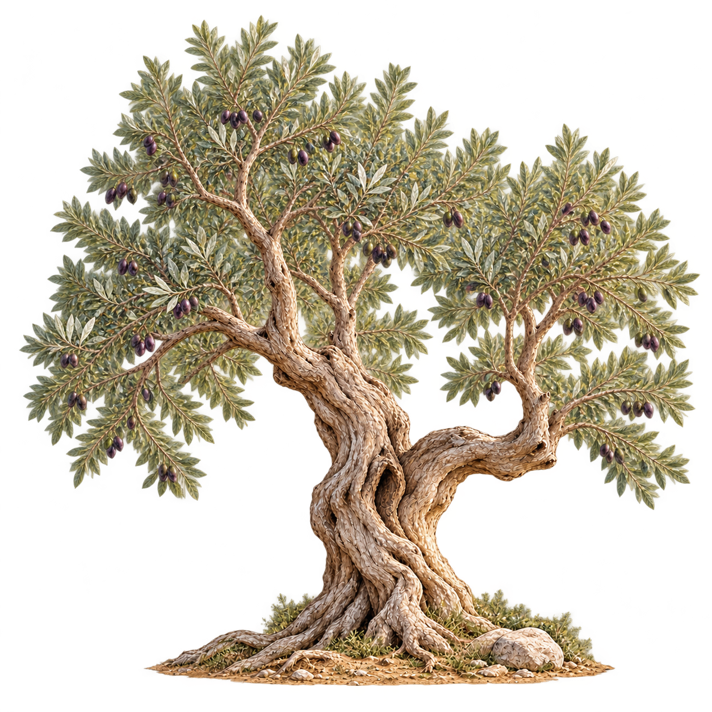

FaithPath · Lichtkrone · Designfreigabevorschau
Der freigegebene A.4-Master bleibt erhalten. Die sechs jüngeren Darstellungen sind davon abgeleitet. Kein automatisches Wachstum durch Lesen, Quiz oder erledigte Schritte.

Der sichtbare Unterschied liegt in der Bewegung. Das ursprüngliche Bild wurde nicht durch eine neue Stufe-7-Illustration ersetzt.